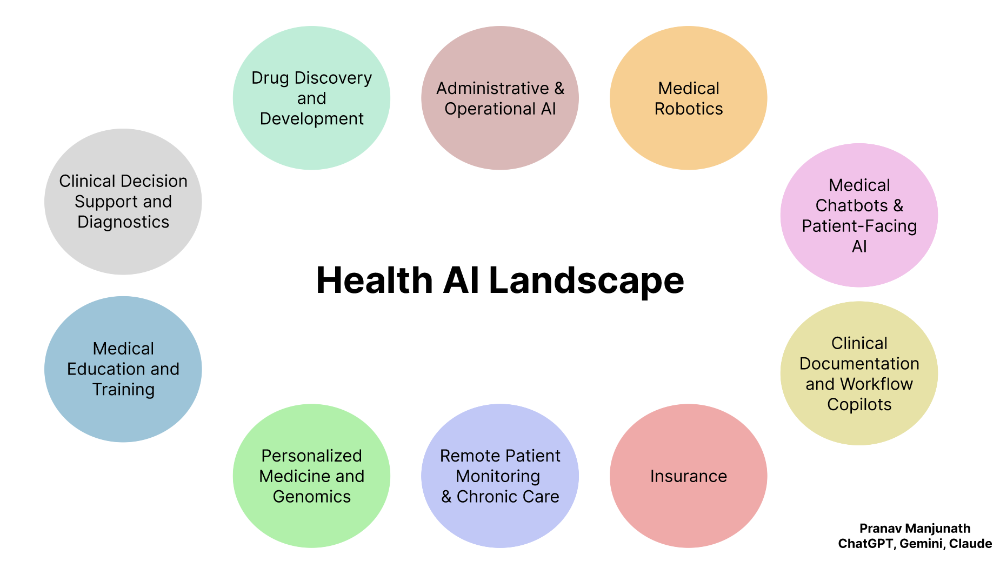

HealthAI Landscape
The HealthAI landscape spans clinical decision support, diagnostics, documentation copilots, patient-facing chatbots, remote monitoring, operations and revenue-cycle automation, and emerging areas like robotics and genomics-driven personalization. Mature categories are integrating tightly with EHRs and enterprise imaging, while newer entrants emphasize transparency, workflow fit, and real-world validation. Regulatory pathways (e.g., SaMD), data governance, and human-centered design are now as critical as model accuracy, shaping which solutions actually scale at the point of care.
